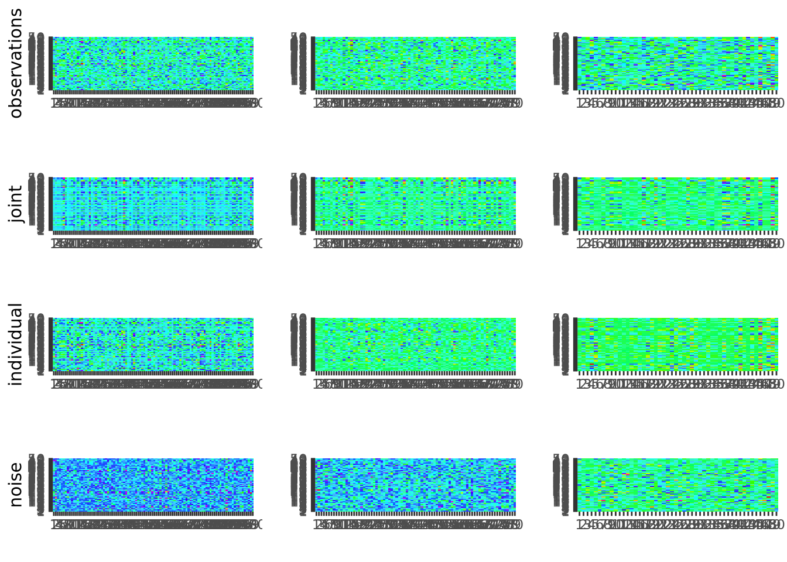
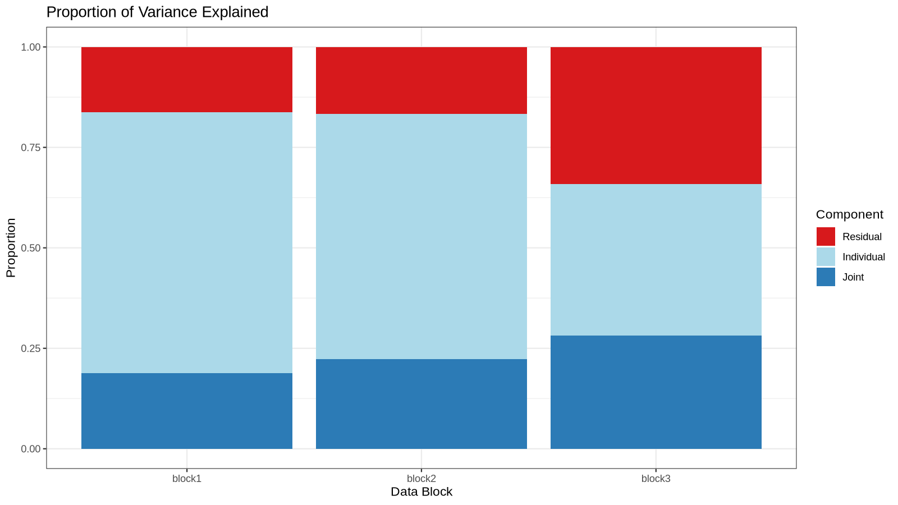
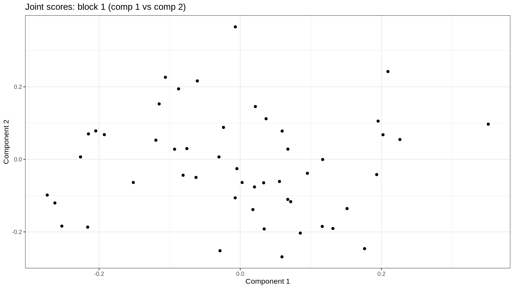
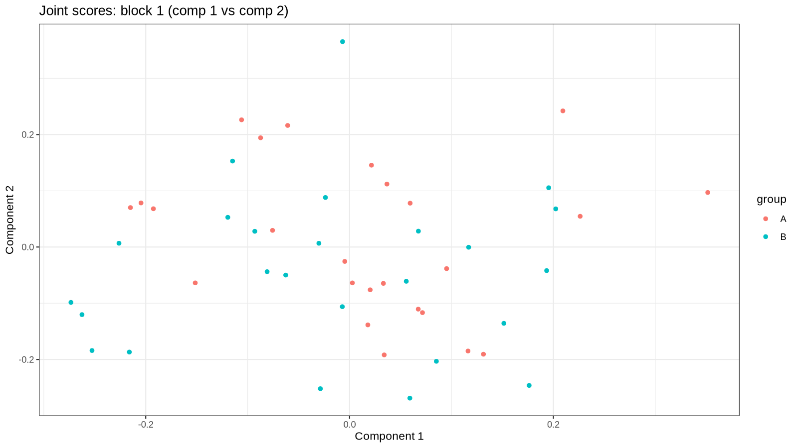

rajiveplus is a fast, robust re-implementation of the Robust Angle-based Joint and Individual Variation Explained (RaJIVE) algorithm for multi-source / multi-omics data integration.
See the package website for the full function reference and the vignettes for benchmarks and applied analyses.
The development version of rajiveplus can be installed from GitHub with:
# install.packages("remotes")
remotes::install_github("mdmanurung/rajiveplus")The example below runs the full RaJIVE pipeline on simulated three-block data, then shows how to inspect ranks, scores, loadings, variance explained, and feature-level significance.
library(rajiveplus)
set.seed(1)
# Simulate three blocks (matched samples, different feature spaces) with
# joint rank 3 and block-individual ranks (7, 6, 4).
n <- 50
pks <- c(100, 80, 50)
Y <- ajive.data.sim(K = 3, rankJ = 3, rankA = c(7, 6, 4),
n = n, pks = pks, dist.type = 1)
data.ajive <- Y$sim_data
initial_signal_ranks <- c(7, 6, 4)
ajive.results.robust <- Rajive(data.ajive, initial_signal_ranks)
#> Loading required package: foreach
#> Loading required package: rngtoolsThe function returns a list of class "rajive" containing
the RaJIVE decomposition, with the joint component (shared across data
sources), individual component (data source specific) and residual
component for each data source.
print(ajive.results.robust)
#> RaJIVE Decomposition
#> Number of blocks : 3
#> Joint rank : 2
#> Individual ranks : 6, 5, 2summary(ajive.results.robust)
#> block joint_rank individual_rank
#> block1 2 6
#> block2 2 5
#> block3 2 2
get_all_ranks(ajive.results.robust)
#> block joint_rank individual_rank
#> 1 block1 2 6
#> 2 block2 2 5
#> 3 block3 2 2get_joint_rank(ajive.results.robust)
#> [1] 2get_individual_rank(ajive.results.robust, 1)
#> [1] 6
get_individual_rank(ajive.results.robust, 2)
#> [1] 5
get_individual_rank(ajive.results.robust, 3)
#> [1] 2get_joint_scores(ajive.results.robust)
#> [,1] [,2]
#> [1,] -0.129336872 0.004664267
#> [2,] 0.062838110 -0.051406925
#> [3,] -0.129562374 -0.052162238
#> [4,] 0.168508417 -0.140081717
#> [5,] -0.136768986 0.005251158
#> [6,] -0.087444443 0.353927364
#> [7,] 0.116384241 0.089953464
#> [8,] 0.212139314 0.018945901
#> [9,] 0.038900220 0.089969943
#> [10,] 0.108695234 0.301000515
#> [11,] -0.183952402 -0.064283274
#> [12,] 0.018486369 -0.163267220
#> [13,] -0.063075822 0.224032090
#> [14,] -0.218173070 0.010796817
#> [15,] 0.153550799 -0.134538546
#> [16,] -0.056993288 -0.028850280
#> [17,] 0.166370951 -0.153172396
#> [18,] -0.076284171 -0.019629212
#> [19,] 0.079684086 0.086751208
#> [20,] -0.230520660 0.021225080
#> [21,] -0.072635872 -0.002718613
#> [22,] 0.218265988 0.052856267
#> [23,] -0.080104975 0.064215569
#> [24,] -0.020038427 -0.016645077
#> [25,] 0.249136735 0.018316346
#> [26,] -0.003713757 0.221942474
#> [27,] 0.088398045 0.022442180
#> [28,] -0.131232933 0.148078299
#> [29,] -0.080388587 0.018677068
#> [30,] 0.116567887 -0.194023150
#> [31,] 0.189483996 -0.025315532
#> [32,] 0.001357426 -0.092018287
#> [33,] -0.008464911 0.072672765
#> [34,] 0.023654599 -0.287799622
#> [35,] -0.057540717 0.101669144
#> [36,] -0.263298305 -0.079966395
#> [37,] -0.192437608 0.065571095
#> [38,] -0.012841408 -0.079068729
#> [39,] 0.069896645 -0.067413448
#> [40,] 0.020523948 -0.023021568
#> [41,] -0.057152603 -0.279878128
#> [42,] -0.039857352 0.209600277
#> [43,] -0.205706601 -0.148316536
#> [44,] -0.089060227 -0.058148544
#> [45,] -0.300903674 0.033129207
#> [46,] -0.218914623 -0.025225932
#> [47,] 0.321884829 0.172774866
#> [48,] 0.104526207 -0.078343347
#> [49,] -0.036853634 -0.310479237
#> [50,] 0.047923624 -0.286604751# Joint scores for block 1
get_block_scores(ajive.results.robust, k = 1, type = "joint")
#> [,1] [,2]
#> [1,] 0.067373024 -0.1105018437
#> [2,] -0.075585021 0.0296345168
#> [3,] 0.017929333 -0.1385129847
#> [4,] -0.204633304 0.0783784724
#> [5,] 0.071522554 -0.1166955624
#> [6,] 0.351433948 0.0969808717
#> [7,] 0.021475731 0.1455187624
#> [8,] -0.087313164 0.1942638600
#> [9,] 0.059415697 0.0779589167
#> [10,] 0.209277273 0.2421135831
#> [11,] 0.033981432 -0.1918751879
#> [12,] -0.151421306 -0.0637927821
#> [13,] 0.226234627 0.0546519006
#> [14,] 0.116202825 -0.1849674657
#> [15,] -0.192478319 0.0680482524
#> [16,] 0.002738001 -0.0638206618
#> [17,] -0.215002476 0.0701071420
#> [18,] 0.020221174 -0.0761293953
#> [19,] 0.036646671 0.1119479664
#> [20,] 0.131340212 -0.1906306040
#> [21,] 0.033181909 -0.0646708719
#> [22,] -0.060741300 0.2162043498
#> [23,] 0.095205962 -0.0384222720
#> [24,] -0.004706826 -0.0256211426
#> [25,] -0.105971036 0.2262183476
#> [26,] 0.195356872 0.1053942442
#> [27,] -0.023697497 0.0880698266
#> [28,] 0.193361527 -0.0419593277
#> [29,] 0.055634123 -0.0609590196
#> [30,] -0.226248527 0.0066827334
#> [31,] -0.114821237 0.1528435290
#> [32,] -0.080906548 -0.0438558804
#> [33,] 0.067515646 0.0281890580
#> [34,] -0.262546185 -0.1202400216
#> [35,] 0.116821993 -0.0004135455
#> [36,] 0.059142296 -0.2687430197
#> [37,] 0.151370732 -0.1357155226
#> [38,] -0.062664415 -0.0498992660
#> [39,] -0.092997985 0.0279551204
#> [40,] -0.030121078 0.0066291550
#> [41,] -0.216086283 -0.1868285448
#> [42,] 0.202285150 0.0678351141
#> [43,] -0.028649689 -0.2519765780
#> [44,] -0.007115189 -0.1061242263
#> [45,] 0.176170807 -0.2461796332
#> [46,] 0.085153093 -0.2032459357
#> [47,] -0.006887061 0.3652582182
#> [48,] -0.119479022 0.0528031365
#> [49,] -0.252706781 -0.1841054846
#> [50,] -0.273383030 -0.0984920091
# Individual loadings for block 2
get_block_loadings(ajive.results.robust, k = 2, type = "individual")
#> [,1] [,2] [,3] [,4] [,5]
#> [1,] -0.1618990468 -0.027846551 -0.048097134 0.078435340 -8.937258e-02
#> [2,] -0.0322644994 0.030457961 0.053797645 0.079444570 -9.801994e-02
#> [3,] 0.0258899360 0.005656159 0.109858484 0.065360472 -5.472602e-02
#> [4,] -0.0139002917 -0.047022099 -0.039154122 -0.038734714 -1.862205e-01
#> [5,] -0.0709296615 -0.150100415 -0.144321482 -0.109086637 1.604676e-01
#> [6,] 0.0610331811 0.054835285 -0.039762475 0.088562763 -1.053130e-01
#> [7,] 0.1560538132 0.030237542 -0.039890651 -0.229270833 -3.880770e-02
#> [8,] 0.0558953204 -0.198812432 0.077097544 0.166522731 2.327019e-02
#> [9,] 0.0087632550 0.062548537 0.052320265 -0.136079708 4.829285e-02
#> [10,] -0.0296778745 0.081054025 0.058596359 -0.124514791 5.643123e-02
#> [11,] 0.0124509374 0.031734935 0.010519810 0.112320659 -1.027900e-01
#> [12,] -0.0020687324 0.054193391 -0.267090127 -0.055059575 -1.741040e-02
#> [13,] -0.0712250803 0.129795019 -0.033457706 0.130200202 -5.188865e-03
#> [14,] -0.1341477885 -0.012345535 0.172027689 -0.037173278 -3.011550e-01
#> [15,] 0.0080764790 0.269977996 -0.137201932 0.025782789 -1.210426e-01
#> [16,] 0.1123628481 -0.184175816 0.080024934 0.143470676 -8.849618e-02
#> [17,] 0.1410597773 -0.089972311 -0.091953034 0.086182231 -6.323171e-02
#> [18,] 0.1422909414 0.125559536 0.153363041 0.038672086 -1.087052e-01
#> [19,] 0.0047284259 0.104118800 -0.019056219 -0.108146849 -1.721219e-01
#> [20,] 0.0198153170 0.027033914 0.005501533 -0.080639697 -2.158865e-02
#> [21,] 0.1108755731 0.270843248 0.178471790 0.271038289 -1.136985e-01
#> [22,] -0.2202526900 0.148451954 -0.040277550 -0.040331377 -6.737864e-02
#> [23,] 0.1440257396 -0.113395563 -0.037840614 -0.148837368 -6.801792e-02
#> [24,] 0.1528453003 -0.034254736 0.163589618 -0.144701341 -1.458632e-01
#> [25,] 0.0008206224 0.157532050 0.161336987 -0.043581199 1.488163e-01
#> [26,] -0.0808478033 0.104268583 0.169526853 0.109004515 -2.301200e-01
#> [27,] -0.0668909379 -0.034304091 -0.158667270 0.055595352 -8.736014e-02
#> [28,] 0.1045124686 0.223532764 -0.161901410 -0.125284841 -1.478075e-01
#> [29,] 0.0281486428 -0.010724656 -0.039447227 -0.085600587 9.822032e-02
#> [30,] -0.0393316744 0.088447613 -0.123418036 -0.026572099 3.778895e-02
#> [31,] 0.0831599275 0.061206434 0.177631343 0.004266332 1.314432e-01
#> [32,] -0.1373477352 0.066414911 -0.011106816 -0.057561231 1.399098e-01
#> [33,] 0.0167180314 0.057373410 -0.044773527 0.055372179 1.151698e-01
#> [34,] -0.1227801161 -0.074982080 0.095015610 -0.099468681 -1.997093e-02
#> [35,] -0.2644175003 -0.032147501 0.118287472 0.077948004 8.276495e-02
#> [36,] -0.0392856699 -0.082515314 -0.116296374 0.247670777 1.345796e-01
#> [37,] 0.0474866180 -0.035598870 0.086171241 0.155755026 -1.021792e-01
#> [38,] 0.1380467301 0.048270222 0.049966349 -0.002849122 3.441683e-01
#> [39,] 0.0460483174 -0.116253887 -0.085932846 0.017519567 -4.641884e-02
#> [40,] -0.1067223776 0.069479236 -0.181790743 0.153666686 4.104121e-02
#> [41,] -0.1751462459 0.062161776 -0.105671552 0.024690735 3.927060e-02
#> [42,] 0.1154419976 -0.257489920 -0.017232242 -0.103248961 1.210586e-01
#> [43,] 0.1249153921 0.045622251 0.168648507 -0.196464240 1.332261e-01
#> [44,] -0.0568445985 -0.029036158 0.193681768 0.101244565 -1.180667e-01
#> [45,] -0.1837256193 -0.185055604 0.014468146 -0.120551053 -2.407739e-02
#> [46,] -0.1812138199 0.044712622 0.117100729 -0.126442211 3.034642e-02
#> [47,] -0.0476130343 -0.063621571 -0.008356553 0.106513723 1.401999e-01
#> [48,] -0.0819878602 -0.075921512 -0.209855930 0.024224510 -6.516853e-02
#> [49,] 0.2538633985 -0.087780382 0.006653687 0.069219504 1.151030e-01
#> [50,] 0.1093054722 0.138018575 -0.051900412 0.178072689 5.044012e-02
#> [51,] 0.0718571163 0.005488625 0.098381844 -0.056970238 -7.572477e-02
#> [52,] -0.0520847699 -0.017579603 -0.011594801 -0.078121997 -7.844743e-02
#> [53,] -0.0015016542 0.013951405 0.075404196 0.197099649 2.028075e-02
#> [54,] -0.0526953122 0.023357682 -0.066294464 -0.027995827 -7.739421e-02
#> [55,] -0.1751167580 0.100262522 -0.174996620 0.101154690 1.996354e-05
#> [56,] 0.2816976326 0.257424002 0.030446600 -0.033451598 -7.040712e-03
#> [57,] 0.0811650578 0.197229175 0.032181775 -0.022059333 -7.175451e-02
#> [58,] -0.1036348739 -0.046364629 -0.076554324 0.093708205 -3.385182e-02
#> [59,] 0.0370269132 0.126829733 0.032465634 0.053978512 3.651991e-02
#> [60,] -0.0540697990 0.092025810 0.216078609 -0.005692668 3.981115e-02
#> [61,] -0.0298156241 0.114444673 -0.034916917 0.105854597 3.960109e-02
#> [62,] 0.1046293450 -0.112383906 0.009456470 0.141107242 -5.487846e-02
#> [63,] -0.0976891321 0.124216580 -0.067008408 0.003897315 3.857051e-02
#> [64,] -0.1470570510 0.015793032 0.162309849 0.069438544 1.877137e-01
#> [65,] 0.1266264116 -0.133965561 0.031151246 -0.066162222 -1.137554e-02
#> [66,] 0.0718423152 -0.056438032 -0.049803777 -0.015216532 -9.577263e-02
#> [67,] -0.0176977094 0.137578681 0.082830519 -0.097885945 -1.231877e-01
#> [68,] 0.0780186235 -0.096369698 -0.118830751 0.039496340 -7.552712e-02
#> [69,] -0.2164805767 -0.058786762 0.332151439 0.166520405 -5.195646e-02
#> [70,] 0.0515506209 0.027107173 0.118934110 -0.027674663 9.898933e-02
#> [71,] -0.0403493033 -0.131877857 0.077493687 -0.116815144 -6.561841e-02
#> [72,] 0.2068480041 0.006496184 -0.047867336 0.268826030 -9.880408e-02
#> [73,] -0.0741007217 -0.064009274 -0.071388130 0.152901283 9.618685e-02
#> [74,] 0.0536060614 -0.102775043 -0.108369626 0.008256979 -1.082049e-01
#> [75,] -0.0603402017 -0.074190991 0.054077245 0.053293693 1.270877e-02
#> [76,] 0.0895961287 -0.075137744 0.030660462 0.169894957 -1.322797e-01
#> [77,] -0.0466190873 0.056403232 -0.034088877 -0.038271965 7.345342e-02
#> [78,] 0.0606089657 0.133302618 0.041522245 0.159516763 1.652826e-01
#> [79,] -0.0119922760 -0.219787322 0.098945169 0.067946584 -3.636339e-02
#> [80,] -0.1842371254 -0.094931465 0.114578090 -0.101323266 -2.752647e-01J1 <- get_block_matrix(ajive.results.robust, k = 1, type = "joint")
I2 <- get_block_matrix(ajive.results.robust, k = 2, type = "individual")
E3 <- get_block_matrix(ajive.results.robust, k = 3, type = "noise")decomposition_heatmaps_robustH(data.ajive, ajive.results.robust)
knitr::include_graphics("man/figures/README-heatmap-1.png")
showVarExplained_robust(ajive.results.robust, data.ajive)
#> $Joint
#> [1] 0.1888085 0.2233709 0.2823030
#>
#> $Indiv
#> [1] 0.6481027 0.6106243 0.3768674
#>
#> $Resid
#> [1] 0.1630888 0.1660047 0.3408296png("man/figures/README-variance-explained.png", width = 1600, height = 900, res = 150)
print(plot_variance_explained(ajive.results.robust, data.ajive))
dev.off()
#> png
#> 2
knitr::include_graphics("man/figures/README-variance-explained.png")
png("man/figures/README-scores-joint.png", width = 1600, height = 900, res = 150)
print(plot_scores(ajive.results.robust, k = 1, type = "joint",
comp_x = 1, comp_y = 2))
dev.off()
#> png
#> 2
knitr::include_graphics("man/figures/README-scores-joint.png")
# Colour points by a grouping variable
group_labels <- rep(c("A", "B"), each = n / 2)
png("man/figures/README-scores-joint-grouped.png", width = 1600, height = 900, res = 150)
print(plot_scores(ajive.results.robust, k = 1, type = "joint",
comp_x = 1, comp_y = 2, group = group_labels))
dev.off()
#> png
#> 2
knitr::include_graphics("man/figures/README-scores-joint-grouped.png")
After running the RaJIVE decomposition, you can test which variables in each data block have statistically significantly non-zero joint loadings using the jackstraw permutation test.
By default, jackstraw_rajive() applies global BH
(Benjamini–Hochberg) correction across all block/component/feature
tests. BH is appropriate under positive regression dependency; pass
correction = "BY" for the more conservative
Benjamini–Yekutieli adjustment under arbitrary feature dependence. Pass
pip = TRUE (requires Bioconductor qvalue) for
posterior inclusion probabilities in addition to p-values.
# Run jackstraw testing; increase n_null when finer tail resolution is needed
js <- jackstraw_rajive(ajive.results.robust, data.ajive,
alpha = 0.05, n_null = 10)
# Conservative FDR adjustment for strongly dependent features
js_by <- jackstraw_rajive(ajive.results.robust, data.ajive,
alpha = 0.05, n_null = 10,
correction = "BY")
# Posterior inclusion probabilities via qvalue::lfdr()
js_pip <- jackstraw_rajive(ajive.results.robust, data.ajive,
alpha = 0.05, n_null = 10,
pip = TRUE)
# Print a concise summary table
print(js)
# Get a data frame summary
summary(js)The package now includes unified helpers for diagnostics, metadata association, and bootstrap stability assessment:
# Extract AJIVE rank diagnostics (wide or long format)
diag_wide <- extract_components(ajive.results.robust, what = "rank_diagnostics")
diag_long <- extract_components(ajive.results.robust, what = "rank_diagnostics", format = "long")
head(diag_long)
# Unified diagnostic plots
png("man/figures/README-rank-threshold.png", width = 1600, height = 900, res = 150)
print(plot_components(ajive.results.robust, plot_type = "rank_threshold"))
dev.off()
knitr::include_graphics("man/figures/README-rank-threshold.png")
png("man/figures/README-bound-distributions.png", width = 1600, height = 900, res = 150)
print(plot_components(ajive.results.robust, plot_type = "bound_distributions"))
dev.off()
knitr::include_graphics("man/figures/README-bound-distributions.png")
# Associate estimated joint scores with sample-level metadata
metadata_df <- data.frame(group = rep(c("A", "B"), each = n / 2))
associate_components(ajive.results.robust, metadata_df,
variable = "group", mode = "categorical")
# Bootstrap stability of estimated joint rank
# (set B >= 100 for publication use; eval=FALSE here to keep README build fast)
assess_stability(ajive.results.robust, data.ajive, initial_signal_ranks,
target = "joint_rank", B = 20)get_significant_vars(js, block = 1, component = 1)# P-value histogram
png("man/figures/README-jackstraw-pvalue-hist.png", width = 1600, height = 900, res = 150)
print(plot_jackstraw(js, type = "pvalue_hist", block = 1, component = 1))
dev.off()
knitr::include_graphics("man/figures/README-jackstraw-pvalue-hist.png")
# F-statistic vs -log10(p-value) scatter plot
png("man/figures/README-jackstraw-scatter.png", width = 1600, height = 900, res = 150)
print(plot_jackstraw(js, type = "scatter", block = 1, component = 1))
dev.off()
knitr::include_graphics("man/figures/README-jackstraw-scatter.png")
# Heatmap of -log10(p-value) across all joint components for one block
png("man/figures/README-jackstraw-loadings-significance.png", width = 1600, height = 900, res = 150)
print(plot_jackstraw(js, type = "loadings_significance", block = 1))
dev.off()
knitr::include_graphics("man/figures/README-jackstraw-loadings-significance.png")| Function | Description |
|---|---|
Rajive() |
Run the RaJIVE decomposition on a list of data matrices. Returns an
object of class "rajive" with joint, individual, and
residual decompositions plus joint-rank diagnostics. |
ajive.data.sim() |
Simulate multi-block data with known joint and individual structure for testing and benchmarking. |
sim_dist() |
Generate centred simulation noise distributions used by
ajive.data.sim(). |
| Function | Description |
|---|---|
get_joint_rank() |
Extract the estimated joint rank from a "rajive"
object. |
get_individual_rank() |
Extract the individual rank for a specific data block. |
get_all_ranks() |
Return a data.frame of joint and individual ranks for
all blocks at once. |
| Function | Description |
|---|---|
get_joint_scores() |
Return the shared n x r_J joint score matrix (r_J = joint rank). |
get_block_scores() |
Return the score matrix (U) for a given block and component type (joint or individual). |
get_block_loadings() |
Return the loading matrix (V) for a given block and component type. |
get_block_matrix() |
Return the full reconstructed matrix (J, I, or E) for a given block and component type. |
extract_components() |
Extract scores, loadings, variance tables, jackstraw significance tables, or rank diagnostics in wide or long format. |
"rajive" objects| Function | Description |
|---|---|
print.rajive() |
Print a concise summary of ranks for a "rajive"
object. |
summary.rajive() |
Return and print a data.frame of all estimated
ranks. |
| Function | Description |
|---|---|
showVarExplained_robust() |
Compute the proportion of variance explained by joint, individual, and residual components for each block (returns a list). |
plot_variance_explained() |
Stacked bar chart of variance explained by each component and block. |
| Function | Description |
|---|---|
extract_components() |
Extract AJIVE rank diagnostics, scores, loadings, variance summaries, or jackstraw significance in wide-list or long-data-frame format. |
plot_components() |
Unified diagnostic and interpretation plotting, including
rank_threshold, bound_distributions, and
ajive_diagnostic. |
rank_features() |
Rank top loadings, feature contributions, cross-block feature-set overlap, or jackstraw-significant features. |
get_top_loadings() |
Thin wrapper around
rank_features(mode = "top_loadings"). |
get_feature_contributions() |
Thin wrapper around
rank_features(mode = "contribution"). |
compare_feature_sets_across_blocks() |
Thin wrapper around
rank_features(mode = "overlap"). |
summarize_significant_vars() |
Thin wrapper around
rank_features(mode = "significant"). |
summarize_components() |
Summarize ranks, variance, significance counts, associations, or stability output. |
associate_components() |
Test associations between estimated component scores and sample metadata. |
associate_scores_continuous() /
associate_scores_categorical() /
associate_scores_survival() |
Compatibility wrappers for common association modes. |
assess_stability() |
Bootstrap-based stability assessment for joint rank, loadings, or components, with Procrustes alignment where needed. |
bootstrap_joint_rank() /
bootstrap_loading_stability() |
Compatibility wrappers around assess_stability(). |
export_results() |
Export tables, R objects, and lists of ggplot objects. |
rajive_report() |
Build a lightweight HTML or Markdown interpretation report. |
| Function | Description |
|---|---|
decomposition_heatmaps_robustH() |
Heatmaps of the raw data and the joint, individual, and noise components for all blocks. |
plot_scores() |
Scatter plot of two score components for a given block (joint or individual), with optional group colouring. |
plot_components() |
Unified plotting entry point for score pairs/densities, top features, component heatmaps, variance, associations, jackstraw summaries, stability, and rank diagnostics. |
plot_stability_heatmap() |
Compatibility wrapper for stability plots. |
autoplot.rajive() /
autoplot.jackstraw_rajive() |
ggplot2::autoplot() methods for decomposition and
jackstraw objects. |
fortify.rajive() /
fortify.jackstraw_rajive() |
ggplot2::fortify() methods for tidy plotting data. |
| Function | Description |
|---|---|
jackstraw_rajive() |
Run the jackstraw permutation test to identify features
significantly associated with estimated joint scores. Default
multiple-testing correction is global BH; optional
correction = "BY" gives conservative arbitrary-dependence
control. Optional pip = TRUE adds posterior inclusion
probabilities via qvalue::lfdr(). |
print.jackstraw_rajive() |
Print a significance table for a "jackstraw_rajive"
object. |
summary.jackstraw_rajive() |
Return and print a data.frame summary of jackstraw
results. |
get_significant_vars() |
Extract significant variable names/indices for a given block and component from jackstraw results. |
plot_jackstraw() |
Diagnostic plots for jackstraw results: p-value histogram, F-stat scatter plot, or loadings significance heatmap. |
vignettes/ and on the
package website):
function_gallery — short, runnable demos of every
exported function.benchmarking — runtime / memory comparison vs the
original RaJIVE package.jackstraw_scaling — practical guide to choosing
n_null for jackstraw_rajive().cll_application — end-to-end multi-omics integration on
the CLL cohort (Dietrich et al. 2018).microbiome_application — multi-kingdom gut microbiome
integration (Haak et al. 2021).A few caveats worth keeping in mind when interpreting
Rajive() output:
max(). The rule
is conservative in practice but does not carry a formal FWER/FDR
guarantee for rank selection.rajiveplus therefore uses base::svd() inside
get_random_direction_bound_robustH(), matching the AJIVE
reference implementation. The robust SVD is still used for every other
step in the pipeline, including signal-block SVDs and the joint and
individual decompositions.associate_components() and
jackstraw_rajive() do not propagate score-estimation
uncertainty and should be treated as post-decomposition exploratory
analyses.split = "none"
(continuous-score Cox model) for primary inference; median/tertile
splits are data-adaptive and may be anti-conservative.